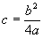
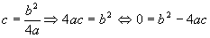
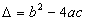
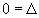
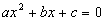
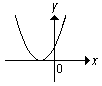
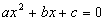
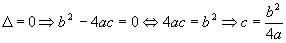

Item 02: O gráfico de  quando
quando

, é tangente ao eixo x.Primeira maneira:

Mas

, substituindo na igualdade acima:

Então y tem dois zeros reais e iguais, ou seja, o gráfico de y tangencia o eixo x.
Exemplo de um gráfico de função do segundo grau que tem duas raízes reais iguais, ou seja o discriminante() da equação  é igual a zero. |
Segunda maneira:
Se o gráfico de y tangenciar o eixo x(veja figura acima), a equação

terá o valor do discriminante igual a zero, ou seja:

Conclusão: O item 02 é verdadeiro.
 Voltar
Voltar